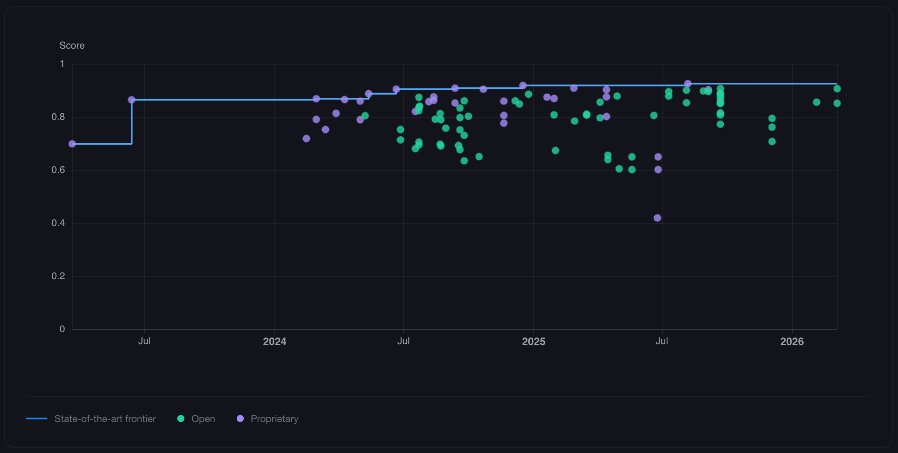
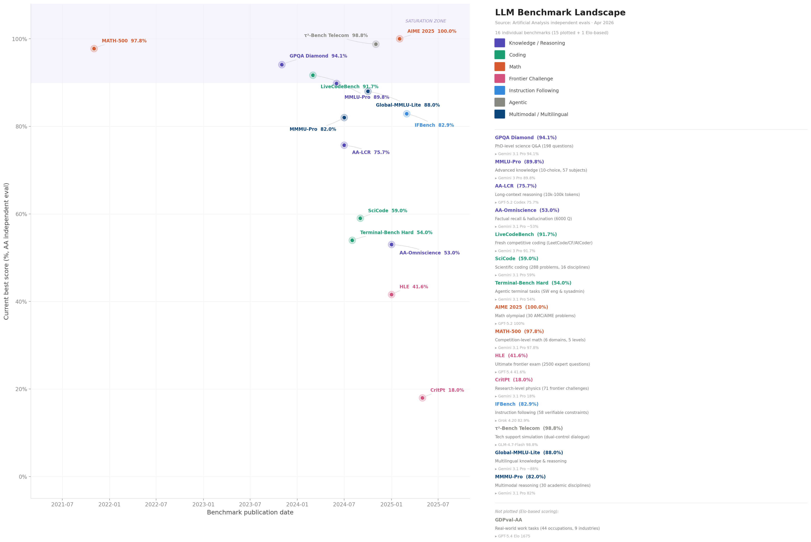
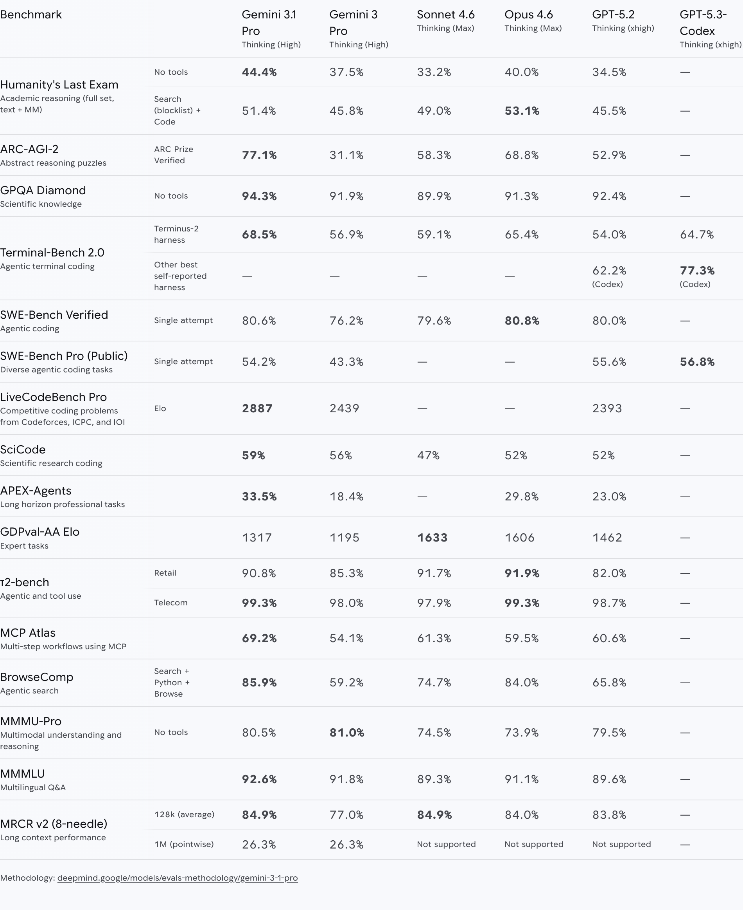
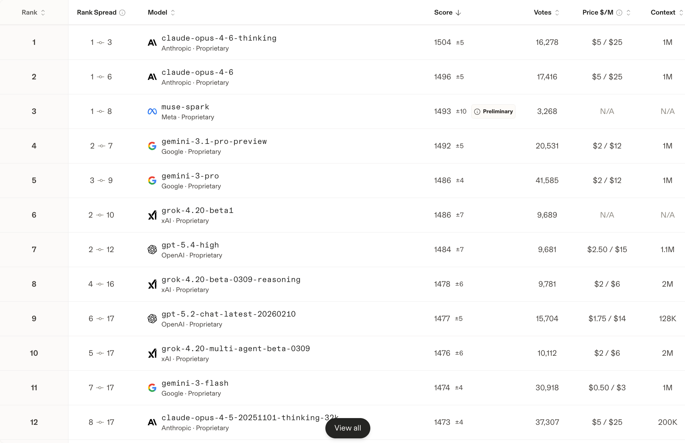
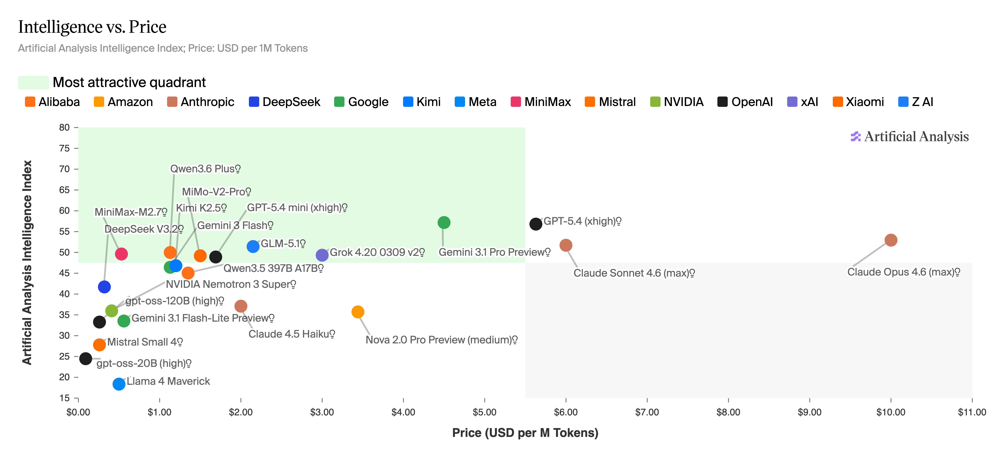

by Chongming Ni · Apr 12, 2026
Post 1.1 answered why the modern LLM looks the way it does — the transformer, decoder-only design, next-token prediction, the scaling laws that govern where things go from here. Now a more immediate question: once you have one of these models, how do you know if it's actually good?
It's harder to answer than it sounds. By the end of this post, you'll understand how the benchmark ecosystem evolved and why it's in a permanent arms race, what the major labs are actually measuring when they publish model cards, and how to correctly read public leaderboards.
Here's a pattern worth knowing before you trust any number on a model card: every benchmark that becomes widely used eventually dies. Not because it was wrong, but because models get so good at it that it stops being able to tell you which model is better. The field then reaches for something harder. And the cycle repeats.
Before the GPT era
Before large language models, NLP research was task-specific and pipeline-driven. Models were evaluated on narrow, well-defined tasks: machine translation (BLEU score on WMT datasets), text summarization (ROUGE on CNN/DailyMail), and sentiment classification. Each task had its own dataset, its own metric, and its own leaderboard. The idea of evaluating a single model across all of them simultaneously didn't exist, because no model did all of them. It was not common to measure the general intelligence of a model — because no model was generally intelligent.
GPT-3 (2020) changed this. With 175B parameters and few-shot prompting, it could perform dozens of tasks without any task-specific training. A model that could write poetry, answer medical questions, and translate between languages in the same forward pass now needed a fundamentally different kind of test — one that could measure general capability rather than performance on a single narrow task.
The knowledge era
The field reaches for academic exams as proxies for general intelligence. MMLU (Hendrycks et al., 2021a) — Massive Multitask Language Understanding, 57 subjects and ~16,000 multiple-choice questions spanning history, science, law, medicine, and math — becomes the standard. The logic is straightforward: if a model passes college-level exams across every discipline, it must be generally capable.
For a few years, this worked. GPT-3 zero-shot scored ~43%. GPT-4 hit ~86%. And then by 2024, every frontier model was above ~90%, clustered so tightly that the benchmark could no longer discriminate between them. MMLU was effectively saturated.

Figure 1. MMLU saturation over time — scores for open and proprietary models from 2023 to 2026. Source: llm-stats.com.The reasoning era
Something shifts when instruction-tuned models arrive. These models don't just recall facts — they follow instructions and work through problems. This is the era when Chain-of-Thought (CoT) prompting (Wei et al., 2022) is shown to dramatically improve performance on multi-step problems. The key insight is quite simple: if you ask a model to show its reasoning before giving a final answer, it does significantly better on questions that require multiple intermediate steps.
A classic example from the original paper illustrates why. Without CoT, models would frequently answer the question: "The cafeteria had 23 apples. If they used 20 to make lunch and bought 6 more, how many apples do they have?" with 27 — an incorrect shortcut that skips a step. With CoT prompting — explicitly walking through "23 − 20 = 3, then 3 + 6 = 9" — models arrived at the correct answer of 9. The intermediate steps weren't decoration; they scaffolded the model's reasoning process.
The distinction from the knowledge era matters. MMLU tests what a model knows. Reasoning benchmarks test whether a model can derive the right answer through a chain of steps, even for problems it has never encountered. The field shifts toward GSM8K (Cobbe et al., 2021), a dataset of 8,500 grade-school math word problems each requiring 2–8 reasoning steps, and ARC-Challenge (Clark et al., 2018), grade school science questions resistant to surface pattern-matching. These saturate even faster than MMLU — GPT-4 clears ~95% on GSM8K.
Coding earns a special callout. HumanEval (Chen et al., 2021) — 164 handwritten Python function completions evaluated by unit test pass rate — becomes the coding proxy. By 2023, code generation had stopped being a niche research capability. GitHub Copilot had gone GA in June 2022; Cursor launched in 2023; Claude Code followed as a research preview in February 2025. The entire developer tooling ecosystem was reorganizing around LLM-powered coding frameworks, making coding benchmarks commercially urgent in a way that abstract academic benchmarks were not.
The frontier and agentic era
Two shifts happen in quick succession. Together, they define where capability evaluation stands today.
First, difficulty escalates to PhD level. MMLU-Pro (Wang et al., 2024), a harder version with 10-option questions across ~12,000 problems, becomes the live replacement for MMLU. Beyond that, GPQA Diamond (Rein et al., 2023), 198 questions in biology, chemistry, and physics, becomes the default reasoning signal. The benchmark is deliberately "Google-proof": questions are designed so that having unlimited web access barely helps — non-experts with full internet access score only ~34%, while human PhD experts score ~65–74%. The design principle is explicit: if you can Google your way to the answer, the benchmark is measuring search skill, not genuine understanding. Humanity's Last Exam (Phan et al., 2025), 2,500 questions from ~1,000 domain experts across disciplines, launched January 2025, represents the current ceiling of published benchmark difficulty. At launch, no model was expected to exceed ~10%; frontier models now reach ~30–55%. Alongside GPQA, AIME (competition-level math with integer answers) and MATH-500 (Hendrycks et al., 2021b), a curated set of competition problems, become the math standards.
Second, static single-turn benchmarks give way to multi-step task completion. SWE-bench Verified (OpenAI, 2024), a dataset of 500 real GitHub issues where models must generate code patches that pass existing unit tests using only a bash terminal and text editor, becomes the definitive signal for agentic capability. This is qualitatively different from anything that came before. The model must understand a real codebase, localize where a change is needed, write working code, and not break anything else. It's the first benchmark that measures whether a model can do actual engineering work, not just answer questions about it. Scores went from ~2% in early 2024 to ~94% for Claude Mythos Preview — Anthropic's most capable model to date, released April 7, 2026, restricted to a narrow set of cybersecurity partners under Project Glasswing — a 47× improvement in two years.

Figure 2. The benchmark landscape as of Apr 2026 — each point is a benchmark colored by task type (reasoning, math, coding, agentic). As scores approach 100%, new harder benchmarks appear lower on the y-axis. Source: Artificial Analysis.Benchmarks are getting harder and closer to real production tasks — that's genuine progress. But SOTA models also advance faster than the field can introduce new benchmarks, and saturation often follows within a year or two of adoption.
One more thing worth noting before moving on: benchmark scores don't map 1:1 to how a model feels to use. Part of this gap is structural. As benchmarks become widely known, there's a real risk of contamination — evaluation problems appearing, directly or in paraphrased form, in a model's training data. A high score on a saturated benchmark where contamination is hard to rule out tells you less than a high score on a freshly introduced one.
When a frontier lab launches a new model, the benchmark scores don't appear in isolation — they're published as part of a model card, a structured transparency document that accompanies the release.
A model card is designed to answer four questions in sequence:
Unlike a product announcement, a model card is designed to show the work, including the parts that didn't go well. The benchmark scores we care about are the answer to question 2.

Figure 3. Benchmark comparison table from the Gemini 3.1 Pro model card (Feb 2026). Bold values indicate the highest score per row. Source: Google DeepMind.The most common benchmarks from top-tier model cards, categorized by capability domain:
Reasoning & math — from competition math to PhD-level science
| Benchmark | What it tests | Published |
|---|---|---|
| GPQA Diamond | PhD-level questions in biology, chemistry, and physics | Nov 2023 |
| ARC-AGI-2 | Novel visual pattern puzzles designed to test general reasoning, not memorization | Mar 2025 |
| Humanity's Last Exam | Extremely hard academic questions across many disciplines | Jan 2025 |
Coding & software engineering — can the model write, debug, and fix real-world code?
| Benchmark | What it tests | Published |
|---|---|---|
| SWE-bench Verified | 500 human-verified GitHub issues; tests whether agents can produce patches that pass the full test suite | Aug 2024 |
| SWE-bench Pro | 1,865 harder tasks from 41 actively-maintained repos requiring multi-file, long-horizon patches | Sep 2025 |
| Terminal-Bench 2.0 | Real terminal-based coding, system administration, and data-processing workflows in a live shell | Nov 2025 |
Agentic & computer use — long-horizon task completion across tools, browsers, and operating systems
| Benchmark | What it tests | Published |
|---|---|---|
| BrowseComp | Hard web-research problems requiring persistent, multi-site browsing to locate deeply entangled facts | Apr 2025 |
| MCP Atlas | Multi-step tool chaining and planning using real MCP (Model Context Protocol) servers | Jan 2026 |
| OSWorld-Verified | Multimodal agents completing real desktop GUI tasks spanning multiple applications on a live Ubuntu VM | Jul 2025 |
| τ²-bench | Dual-control interactions where both user and agent coordinate actions across telecom and retail support scenarios | Jun 2025 |
Knowledge & multilingual — breadth of factual knowledge across languages and professional domains
| Benchmark | What it tests | Published |
|---|---|---|
| MMMLU | MMLU's 14,079 questions translated into 14 non-English languages; measures multilingual breadth across 57 subjects | Sep 2024 |
| GDPval | Economically valuable knowledge work simulating 44 professional occupations across 9 industries | Oct 2025 |
| MMMU-Pro | Reasoning-intensive multimodal questions across 30 disciplines, designed to reduce pattern exploitation and contamination | Sep 2024 |
Long-context & retrieval — sustained coherence and precision across very long contexts
| Benchmark | What it tests | Published |
|---|---|---|
| GraphWalks | Graph traversal over synthetic directed graphs encoded as hex hashes; tests structural long-context reasoning at 128k+ tokens | Apr 2025 |
| MRCR v2 | Multi-round co-reference resolution across long synthetic dialogues; tests precise recall at up to 1M tokens | Apr 2025 |
One category worth naming separately is safety and risk. These benchmarks don't measure what the model can helpfully accomplish — they probe whether it can be weaponized, manipulated into causing harm, or made to take hidden actions that undermine oversight. As frontier models become more capable, this section of the model card grows proportionally in importance. Labs also typically run additional private evaluations that never appear in the published card, partly to avoid contamination and partly because some risk assessments are too sensitive to disclose. What you see publicly is the floor of the evaluation work done, not the ceiling.
The reason standardized leaderboards exist is that self-reported benchmark scores from model cards are almost never directly comparable, even when they use the same benchmark name.
The reporting-conditions problem
A benchmark score is not a property of a model — it's the output of a pipeline: model + evaluation harness + tool configuration + sampling budget. Any of these can vary without disclosure. The most consequential dimensions:
| Dimension | Impact |
|---|---|
| Sampling strategy (avg@k) | Running the same prompt k times and averaging scores. AIME and GPQA can differ 10–15 pp between k=1 and k=32 at the frontier |
| Test-time parallelism (best-of-k) | Running k distinct agent trajectories in parallel and selecting the highest-scoring one via a scoring model. Distinct from averaging — this is optimization over diverse attempts |
| Tool access | AIME with a Python interpreter vs. without can differ 10–20 pp |
| Scaffolding | The agent framework wrapping the model matters — whether it uses a simple bash loop, a custom retry-on-failure harness, or a multi-agent orchestrator. SWE-bench scores vary substantially across these choices |
SWE-bench Verified is the clearest example of why this matters. A model evaluated with best-of-k parallel compute — sampling multiple agent trajectories and selecting the best via a scoring model — will report a materially higher number than the same model evaluated single-attempt. Both call it "SWE-bench Verified." The underlying model may be identical. The difference is compute budget, not capability.
Public leaderboards with standardized evaluation conditions exist precisely because model cards don't standardize these choices.
LMArena (formerly Chatbot Arena)

Figure 4. LMArena text arena leaderboard — top 12 models as of Apr 12, 2026. Rank spreads reflect the 95% confidence interval; models within a few points of each other are statistically tied. Source: arena.ai.LMArena is a crowdsourced pairwise preference platform. Users submit prompts, vote between two anonymous models, and rankings update continuously. Unlike static benchmark datasets that can appear in training data, LMArena uses real user prompts in real time — making it harder for labs to directly optimize for specific evaluation inputs, which is part of what gives it credibility.
The ranking methodology deserves a brief explanation. The original Chatbot Arena used the standard Elo rating system borrowed from chess, where each player's score updates after every individual match. The problem in the LLM setting: with thousands of simultaneous battles across many different model pairs, processing battles one by one introduces score instability — the final ratings depend on the arbitrary order in which results happen to be recorded. The original Arena mitigated this with bootstrap resampling (repeatedly sampling from the battle history to estimate a stable mean Elo), but it remained a structural limitation. The later adoption of the Bradley-Terry model (Bradley & Terry, 1952) addressed this more cleanly: rather than updating scores battle-by-battle, it estimates each model's underlying strength as a latent parameter. The resulting estimates are then rescaled to match the familiar Elo range (baseline = 1000), which is why you still see Elo-like numbers on the leaderboard even though the underlying math is Bradley-Terry. LMArena became an independent company in early 2025.
LMArena captures human preference on open-ended conversational tasks from a broad, self-selected user population — the most-cited leaderboard in industry because it uses real users on real prompts. But it has real limitations. LMArena's own style-control analysis found that controlling for response length and formatting shifted rankings substantially — verbose-but-flashy models fell while concise-but-accurate ones rose. LMArena now enables style control by default, adjusting rankings to account for response length and formatting. And "The Leaderboard Illusion" (Singh et al., 2025) documented another distortion: providers privately test many model variants before release and publish only the best-performing result, which means the reported score reflects selective disclosure rather than a representative evaluation — Meta, for instance, tested 27 private Llama-4 variants before settling on the one it disclosed.
Arena Elo is a reasonable reference for general conversational quality as perceived by a broad population — but treat it as one signal among several rather than a definitive ranking.
Artificial Analysis

Figure 5. Intelligence vs. price across frontier and open-weight models. The green quadrant marks the most attractive cost-efficiency zone. Source: Artificial Analysis.Artificial Analysis provides automated, continuous benchmarking of LLM APIs from the customer's perspective. It combines quality — through the AA Intelligence Index, a composite of GPQA Diamond, HLE, MMLU-Pro, and a few other representative benchmarks — with serving system metrics like latency, throughput, and price per token. It's one of the few public platforms integrating both model intelligence and inference system performance in a single dashboard, which makes it distinctly useful for practitioners trying to answer "which provider gives me the best latency/price/intelligence tradeoff."
The quality-cost picture that emerges is consistently clear: open-weight models (GPT-OSS 120B, DeepSeek V3.2, Kimi K2.5, Qwen3.5, GLM-5.1) dominate the low- and mid-cost portion of the intelligence frontier, offering substantially better cost efficiency than their proprietary counterparts at comparable intelligence levels. Proprietary models (Gemini 3.1 Pro, Claude 4.6, GPT-5.x) push the absolute intelligence ceiling — but at a premium. The AA Intelligence Index is independently run, so labs cannot self-report their scores.
Open-source benchmark tools
When you need to evaluate an open-weight model yourself — particularly a quantized or otherwise optimized version — the standard tool is lm-evaluation-harness (Sutawika et al., 2026). It supports MMLU, GPQA, and dozens of other benchmarks with standardized prompting and scoring, and is the right tool for establishing quality gates when optimizing a model for deployment.
Benchmarks evolve to stay ahead of the models they measure — what looked like a hard ceiling becomes a floor within a generation, and the field reaches for something harder. Model cards formalize this into a structured transparency artifact, but the scores they report reflect a specific evaluation pipeline, not a stable property of the model. Public leaderboards standardize those conditions, but each captures a different slice: LMArena measures conversational preference across a broad user population, and Artificial Analysis measures intelligence against cost and speed. None of them tells you how a model will perform on your specific workload. That's a question only your own evaluation setup can answer.
Capability without delivery is just potential. The inference system underneath the model — the serving infrastructure, the latency, the throughput, the cost — determines whether any of this actually reaches users at scale. Once you know what a model can do, how do you evaluate whether a system can deliver it fast enough, reliably enough, and cheaply enough to matter in production? The next post answers exactly that: how to evaluate an LLM inference system.